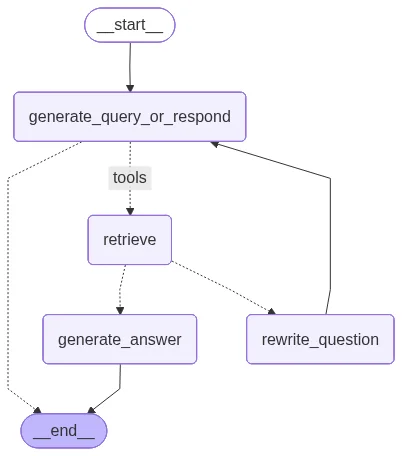
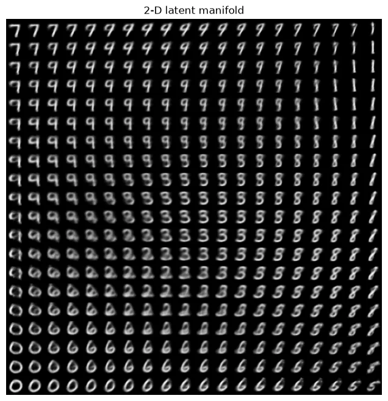
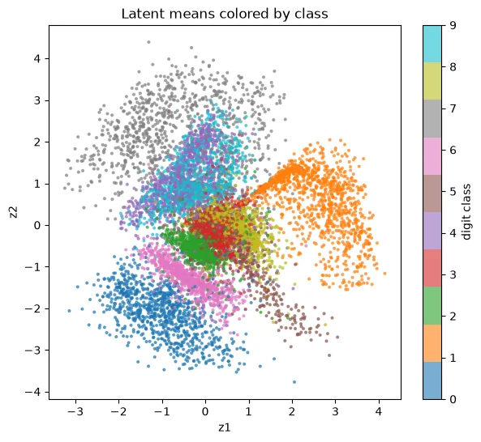
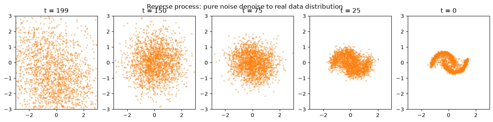
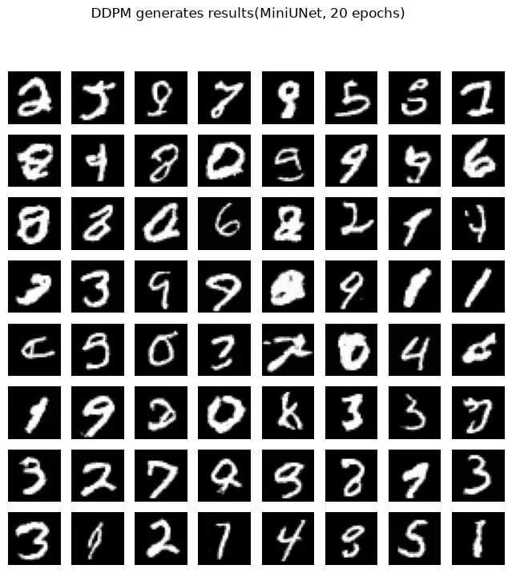

Weeks nine through twelve of the MVC Lab course turn wholesale towards generative AI: W9 assembles retrieval into an agent that decides for itself with LangGraph, W10 runs image-text inference with CLIP and BLIP, and W11 and W12 cover two generative models — a VAE decoding from latent space and a DDPM denoising step by step from pure noise. All four units ran locally start to finish, with verifiable output from model downloads, training and generation, and the digits the DDPM generated after 20 epochs on MNIST are already legible on sight.
Weeks nine to twelve turn wholesale towards generative AI, and the four units line up from "reading" to "generating": W9 wraps retrieval into an agent that decides its own next step, W10 has the model read image and text together, W11 uses a VAE to decode an image back from compressed latent space, and W12 uses a DDPM to denoise step by step from pure noise. The first two units handle understanding existing content; the last two handle generating new content.
The first eight weeks centred on recognition: classification, detection, segmentation, decision-making, where the model outputs a label, a box, an action. The models in these four weeks start producing things — looking up material to answer a question, describing an image, drawing a digit nobody wrote. The record of the first five assignments sits at EXP / P16, and W6–W8 (open-set detection, semantic segmentation, reinforcement learning) sits in the previous entry.
# The Four Units at a Glance
| Week | Topic | Tools / models | Key result |
|---|---|---|---|
| W9 | Agentic RAG | LangGraph + Chroma + local LLM | routing correct in both scenarios |
| W10 | VLM image-text inference | CLIP ViT-B/32 + BLIP | zero-shot classification 3/3 correct (0.89–1.00) |
| W11 | VAE (MNIST generation) | PyTorch, 2-dimensional latent | loss/sample 187.8 → 150.9 |
| W12 | DDPM (diffusion model) | MiniUNet, 1.37M parameters | legible handwritten digits after 20 epochs |
# Week by Week
W9 — Agentic RAG: letting the model decide whether to look things up
Two notebooks, both running locally: the LLM sits on an inference server on localhost, embeddings run on nomic-embed-text, and the vector store is Chroma. The knowledge base uses the public introduction to the NTUST AI Research Center as demo material, split into 10 chunks; every question has a definite reference answer, so whether retrieval pulled the right passage is verifiable on sight.
The first notebook does basic RAG: load, chunk, embed, retrieve, generate, all the way through. Two small experiments are worth recording: a single query at k=1 often pulls the wrong passage, and multi-query retrieval — having the LLM rewrite the question into several phrasings, retrieve on each, then merge — improved the hit rate visibly; query expansion rewrote "AI for farming" into a string of agricultural keywords before searching, which recovered passages the original query missed.
The second notebook wraps the retriever as a tool with LangGraph and hands the decision to the model. Four nodes on the flow graph: generate_query_or_respond first judges whether the question needs a lookup or a direct answer; a lookup goes to retrieve, and grade_documents assesses whether what came back is relevant; relevant goes to generate_answer to close out, and off-target goes to rewrite_question to rephrase and run again. Two scenarios verified: asking about the centre's research areas took the full retrieval path; on a conversational greeting the model generated an answer directly without retrieving.

W10 — VLM: CLIP aligns, BLIP speaks
No training this week. The assignment is three pure inference demos on six public COCO images. Demo A uses CLIP for zero-shot classification: encode five candidate descriptions of the form "a photo of a ..." and the image separately, then compare cosine similarity. All three test images came out correct — cat 0.982, bear 0.999, street scene 0.889 — with zero training and zero annotation in between.
Demo B runs the reverse as image-text retrieval: each of three query sentences finds the best-matching image among the six. "animals" ranked the bear first, "a vehicle on the street" the street scene, "something you can eat" the food image, with all three rankings correct. The similarity values all sit around 0.2, and the relative ordering is the signal CLIP is usable for.
Demo C uses BLIP to generate a caption, producing "two cats sleeping on a couch" for a photo of two cats, and then runs question answering: what is there (cats), how many (2), the colour of the subject (pink). CLIP aligns image and text into the same vector space for comparison, while BLIP feeds visual features into a language model for generation.
W11 — VAE: compressing MNIST into 2 dimensions and drawing it back
A VAE trained on MNIST: the encoder compresses 784 pixel dimensions into a 2-dimensional latent (outputting mean and variance), the decoder reconstructs the image from the latent, and the loss is reconstruction error plus KL divergence. After 15 epochs, per-sample loss converged from 187.8 to 150.9. The 2-dimensional latent is a deliberate choice — the whole latent space can be laid out flat and looked at.

The image above is the most worthwhile thing in this demo: decoding 20×20 grid points across the latent plane shows 7, 9, 8, 1, 3, 6, 0 morphing continuously, with neighbouring points giving almost identical glyphs. The image below encodes ten thousand test images and colours them by their true digit, where each digit gathers into a cluster and classes with similar glyphs sit next to each other — the smoothness of generation and the clustering structure are two sides of the same thing.

W12 — DDPM: denoising step by step from pure noise
Training the diffusion model splits in two. First, 2-dimensional two-moons toy data verifies the principle: the forward process adds noise over 200 steps on a cosine schedule, with alpha_bar down to 6×10-8 by the final step and the data turned into pure noise; the reverse process trains a small network to predict the noise at each step, sampling back from Gaussian noise gradually until the two-moons shape returns. The demo also runs a contrast: switching the stochastic term off during sampling and taking only the mean at each step collapses the point cloud onto a handful of average paths — generation at its core is sampling from a distribution, and taking only the most likely value at each step cannot express the variety the distribution holds.

The second part moves to MNIST: a 1.37M parameter MiniUNet with time embedding, 20 epochs taking 528 seconds on an RTX 4060, with loss dropping from 0.0605 to around 0.04. Sampling 64 images from pure noise produced digits mostly legible on sight, varying in stroke weight and slant — drawn by the model itself, and absent from the dataset.

# Academic Integrity Statement
This entry records a personal learning process. W10 is a course assignment (pure inference), while W9, W11 and W12 are local reproductions of the course teaching notebooks. The notebook skeletons came from the course, and every execution output, training run and chart was produced on my own machine. The datasets (MNIST, sample COCO images) download from public sources through the code and are never bundled here. MVC Lab students currently taking the course should run it once themselves.
# Tech Stack
- Language — Python 3.11, PyTorch 2.6 (CUDA 12.4)
- W9 — LangChain / LangGraph, Chroma, local LLM inference server + nomic-embed-text
- W10 — HuggingFace Transformers (CLIP ViT-B/32, BLIP captioning / VQA)
- W11 / W12 — torchvision (MNIST), matplotlib; the DDPM is a 1.37M parameter MiniUNet
- Hardware — RTX 4060 8GB (VAE 15 epochs in minutes; DDPM 20 epochs in 528 seconds)
- Notes for reproducing on Windows — DataLoader needs num_workers=0 (spawn mode cannot pickle a lambda transform); pin transformers to 4.x (from 5.x the return type of get_image_features changed)
# Links
MIT License